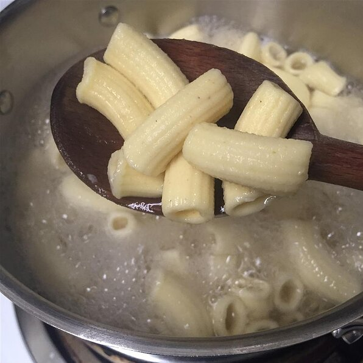

Homemade Pasta without a Pasta Machine

Pasta is a type of food typically made from an unleavened dough of wheat flour mixed with water or eggs, and formed into sheets or other shapes, then cooked by boiling or baking. Rice flour, or legumes such as beans or lentils, are sometimes used in place of wheat flour to yield a different taste and texture, or as a gluten-free alternative. Pasta is a staple food of Italian cuisine.
Pasta is generally served with some type of sauce; the sauce and the type of pasta are usually matched based on consistency and ease of eating.
List of Pasta
Ingredients
- 2 ½ cups Italian-style tipo 00 flour, plus additional for dusting
- 3 large eggs
- 1 pinch salt
- 1 tablespoon water, or as needed
Directions
- Place flour on a marble or wooden work surface. Make a well in the center and crack in the eggs; add the salt. Gently beat eggs with a fork, incorporating the surrounding flour, until batter is runny. Bring remaining flour into the batter using a bench scraper until dough forms a ball. Mix in water, 1 tablespoon at a time, if dough feels too stiff.
- Knead dough with your hands by flattening the ball, stretching it and folding the top towards the center. Turn 45 degrees and repeat until dough is soft and smooth, about 10 minutes.
- Shape dough into a ball. Place in a bowl and cover with plastic wrap. Refrigerate until firm, 30 minutes to 1 hour.
- Dust work surface with flour. Divide dough into 3 equal portions. Flatten 1 piece a little and roll out 5 to 6 times with a rolling pin. Turn dough 45 degrees and roll 5 to 6 times. Continue rolling and turning until dough is 1/16-inch thick.